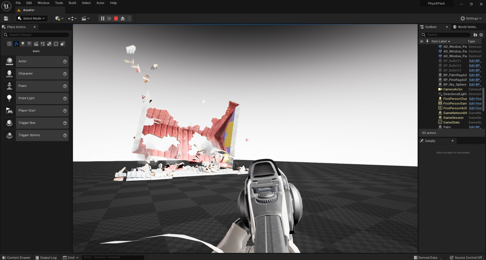

技术演示项目
Vite's main showcase package. Four scenes covering dynamic global illumination, Apex Destruction and Apex Cloth. The reference project for verifying that a build works correctly.

技术演示项目场景在虚幻引擎 Vite 中渲染
技术演示包是用于验证新构建版本是否能够正确渲染和模拟的参考项目。
Contents
| Scene | Demonstrates |
|---|---|
| NVIDIA DDGI Cornell Box office sample | Dynamic DDGI in a controlled reference setting |
| PhysX Apex Destruction test bed | Apex Destruction |
| PhysX Apex Cloth sample | Apex Cloth |
| "High End" DDGI + SSGI Deep Elder Caves | DDGI combined with SSGI in production-scale content |
The Cornell Box is the useful one for understanding DDGI. It is the standard global illumination reference scene precisely because the correct answer is known, so probe placement, leaking and response time are all visible against a ground truth.
The Deep Elder Caves scene is the opposite case: production-scale geometry where DDGI and SSGI are layered. DDGI supplies the low-frequency bounce and SSGI adds the contact-scale detail DDGI's probe grid cannot resolve. See Global Illumination for why both are used together.
Download
Using it as a verification project
Vite's contribution guidelines name this project specifically: engine changes must produce no crashes on startup, shutdown or on the Tech Showcase project. If you are modifying the engine, run this before opening a pull request.
It exercises a useful cross-section: dynamic GI, ray tracing, PhysX destruction and cloth. A change that breaks any of those tends to break it here.
Requirements
Dynamic DDGI requires a DXR-capable GPU on DirectX 12. Apex Destruction and Apex Cloth require their plugins, which are stock 4.27 plugins Vite retains. See Platforms and System Requirements.